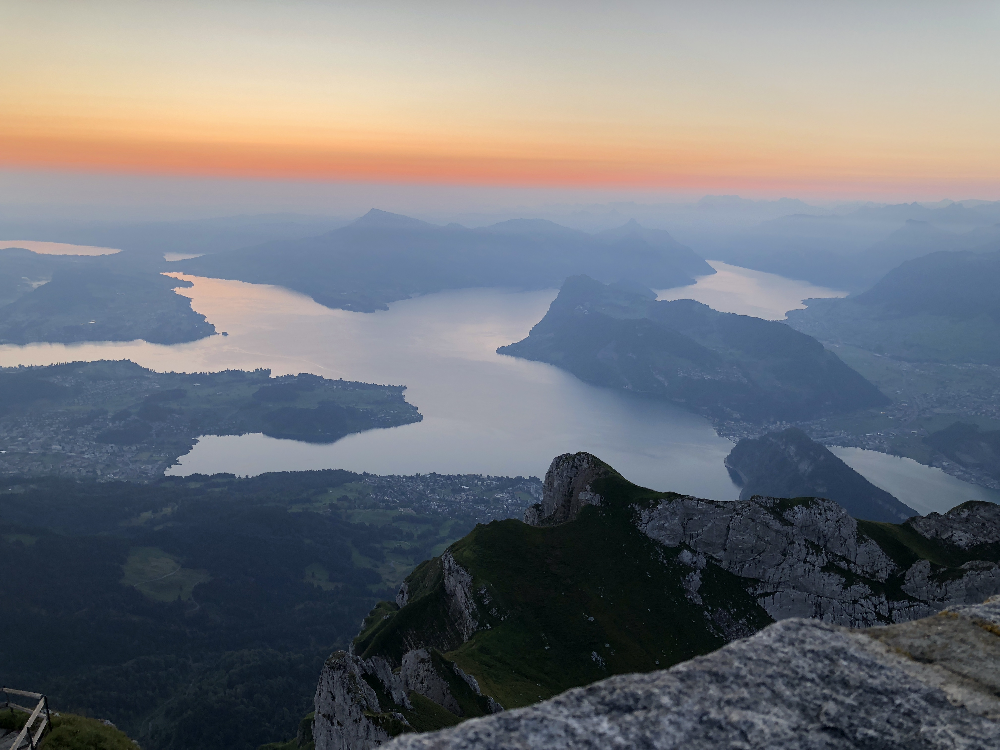

Globetrotter

Growing up in both the USA and Switzerland, I was fortunate to travel extensively from a young age. However, it wasn't until my exchange semester in Singapore that I truly discovered my passion for traveling. I love the sense of freedom and the thrill of the unknown that comes with exploring new places. Experiencing different cultures, traditions, languages, and cuisines excites me immensely.
Over the years, I have visited over thirty countries across five continents. Some of my travel highlights include a three-month backpacking adventure in Southeast Asia after my exchange semester, a two-month trip to Australasia with my girlfriend in early 2024, witnessing over one hundred balloons floating above the fairytale-like landscape of Cappadocia, Turkey, and a three-week visit to Brazil to meet the family of my exchange sister.
My globetrotting experiences have been enriching, mind-opening, and unforgettable. Traveling has given me more than just beautiful vistas and a sense of freedom; it has taught me valuable life lessons.
Life Lessons from Traveling
1. Appreciation of What I Have
Traveling has a way of making us truly value what we often take for granted. Whenever I travel, I find myself longing for clean tap water for example. What traveling also shows, however, is that happiness is not rooted in material possessions but in our experiences. I spent two humbling nights deep in the Sumatran jungle, sleeping in a tent and cooking over a wood fire. Witnessing a hornbill soar through the sky and an orangutan carrying its infant were moments of pure wonder. These travels have deepened my appreciation for everything I have and taught me to cherish the experiences and memories that shape my life.
2. Human Diversity is Beautiful
Traveling has shown me the incredible beauty of human diversity. Every culture has its unique way of life, traditions, and perspectives. This diversity is something to be celebrated and embraced. By immersing myself in different cultures, I've learned to appreciate the richness of our world and the various ways people find joy, solve problems, and live their lives.
3. The World is Big
Traveling has opened my eyes to the vastness of the world. It's easy to get caught up in our own little corners, but there's so much more out there to explore and understand. Each journey teaches me that there's always more to learn and experience. It also reminds me to be a good planner and adaptable, as every destination comes with its own set of challenges and surprises.
In conclusion, I love traveling because it's eye-opening. It makes me appreciate what I have and shows me that things can be done differently, with varying degrees of success. It has also taught me to be a good planner and to celebrate the beauty of humanity in all its diversity. When I travel, I travel along the lines of: